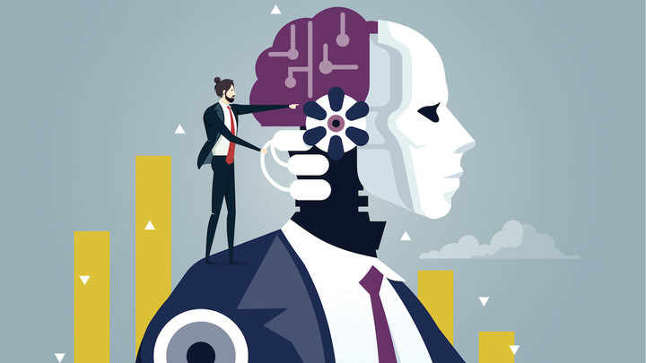

AI Bias
AI bias refers to the potential for artificial intelligence systems to exhibit biased behavior or produce biased results due to the data, algorithms, or design choices used in their development. As AI systems are increasingly integrated into various aspects of society, addressing AI bias has become a critical issue to ensure fairness, accountability, and ethical decision-making.
Types of AI Bias
AI bias can manifest in different forms, including:
- Data bias: When the training data used to develop AI models is biased or lacks diversity, it can lead to biased outputs.
- Algorithmic bias: The algorithms and models used in AI systems can perpetuate or amplify existing biases, either intentionally or unintentionally.
- Interaction bias: The way humans interact with AI systems can introduce biases, such as confirmation bias or user interface design biases.
Impacts of AI Bias
AI bias can have significant consequences, including:
- Unfair treatment or discrimination against certain groups or individuals
- Perpetuation of societal biases and stereotypes
- Inaccurate or biased decision-making in areas like hiring, lending, criminal justice, and healthcare
- Erosion of public trust in AI systems and technologies
Mitigating AI Bias
Addressing AI bias requires a multifaceted approach involving various stakeholders, including AI developers, researchers, policymakers, and end-users. Some strategies to mitigate AI bias include:
- Ensuring diverse and representative training data
- Developing and implementing bias-aware algorithms and models
- Conducting rigorous testing and auditing for bias throughout the AI development lifecycle
- Promoting transparency and explainability in AI systems
- Establishing ethical guidelines and governance frameworks for AI development and deployment
- Fostering interdisciplinary collaboration and inclusive practices in AI research and development